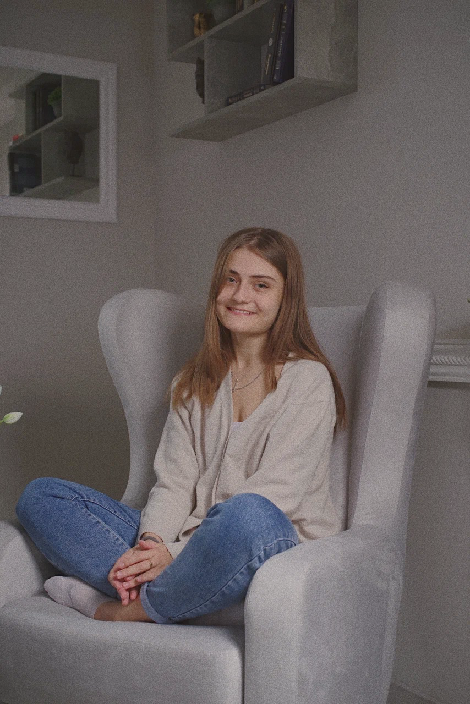
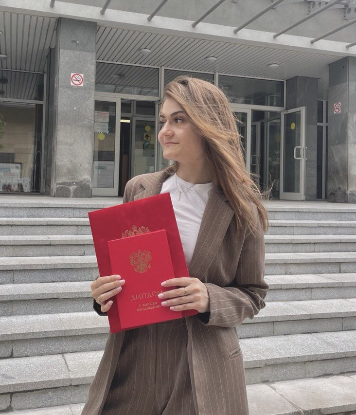

Отношения и границы
В отношениях повторяются болезненные ситуации. Трудно говорить о своих потребностях, отказывать или понимать близких.
Ксения Спицина (Пепина) · психолог
Помогаю разобраться в отношениях, тревоге и сложных жизненных переменах.
Вместе исследуем ваши переживания и привычные реакции, чтобы лучше понимать происходящее и находить собственные способы справляться.
Необязательно заранее формулировать запрос. Можно начать с того, что беспокоит сейчас.

Ваш запрос
Возможно, вы узнаете свою ситуацию в одном из этих описаний.
В отношениях повторяются болезненные ситуации. Трудно говорить о своих потребностях, отказывать или понимать близких.
Переживания занимают много места. Вы замечаете усталость, эмоциональное истощение или трудности с пониманием своих чувств.
Вы сомневаетесь в своих решениях, часто критикуете себя или не понимаете, чего на самом деле хотите.
Вы переживаете расставание, утрату, ситуацию неопределённости или стоите перед сложным выбором.
Не нашли свою ситуацию? Напишите мне — обсудим, подходит ли мой формат работы для вашего запроса.

Знакомство
Я Ксения, практикующий психолог. В работе мне важно понимать именно ваш опыт: что вы чувствуете, как реагируете и какое значение придаёте происходящему.
Не подгоняю историю человека под готовое объяснение. Мы можем исследовать конкретную ситуацию, замечать повторяющиеся трудности и постепенно прояснять, что важно для вас.
В моей подготовке — гештальт-подход и когнитивно-поведенческая психотерапия.
Начало работы
Это возможность познакомиться, обсудить вашу ситуацию и понять, подходит ли вам наше общение.
Можно рассказать о конкретной ситуации или о переживаниях, в которых пока сложно разобраться.
Обсуждаем, что вам важно получить от работы и на чём стоит сосредоточиться.
Вы можете решить, хотите ли продолжать. Формат и периодичность встреч обсуждаем вместе.
Не нужно заранее выбирать длительную терапию. Можно обратиться за разовой консультацией.
Формат и условия
5 000 ₽ / 55 минут
После согласования времени вносится полная предоплата — не позднее чем за сутки до встречи. Для формирования чека при первой записи понадобится электронная почта.
При отмене или переносе менее чем за 24 часа предоплата не возвращается, кроме случаев, предусмотренных согласованными условиями работы.
Если я отменяю консультацию по своей инициативе, следующая сессия проводится за мой счёт.
Перед началом работы мы согласуем условия психотерапевтического контракта.
Прочитать условия контрактаПеред обращением
Можно начать с того, что занимает больше всего места в вашей жизни сейчас. Мы постепенно разберёмся, что для вас важно.
На первой встрече вы сможете познакомиться со мной, обсудить ожидания и оценить, насколько вам подходит формат общения. Решение о продолжении остаётся за вами.
Нет. Возможна разовая консультация или работа с конкретным запросом. Если потребуется более продолжительная работа, обсудим её отдельно. Единого срока для всех нет.
Стоимость и длительность одинаковые: 5 000 ₽ за 55 минут. Онлайн мы встречаемся дистанционно, очно — в Москве, в районе м. Баррикадная / Краснопресненская. Организационные детали согласуем при записи.
Напишите мне в Telegram или MAX. Мы обсудим ваш запрос, формат и время встречи, затем согласуем условия и оплату.
Следующий шаг
Можно коротко рассказать о ситуации или просто написать, что вы хотите записаться. В сообщениях согласуем формат и время консультации.
55 минут · 5 000 ₽ · онлайн или Москва